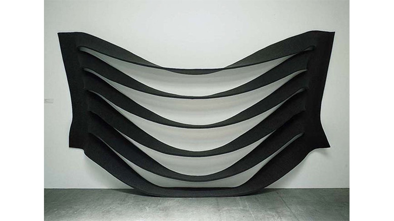

minimal

Robert Morris
https://www.wikiart.org/en/robert-morris-どんな人
20世紀アメリカで活躍した、ミニマル・アートを代表するアーティストです。1960年代半ばは、アルミや鉄の網目のような素材を用いた作品を作っていました。その後はフェルトなど柔らかい素材を折り重ねたり、垂れ下げるような作品をつくるようになりました。
-解説
フェルト生地に等間隔の切れ込みをいれて、壁に貼り付けて垂れ下げた作品です。フェルト生地は下に向かうほど、切れ込みの部分のたわみ方が大きくなっていき、目に見えない重力を感じさせるような印象をもたせます。
-好きなところ
一枚の布に等間隔の切れ込みを入れただけのシンプルな作りにもかかわらず、布を壁に貼り付けるときの調節だけで、徐々にたわんでいく動きを見事につくっているところが好きです。